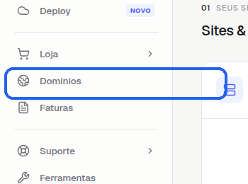
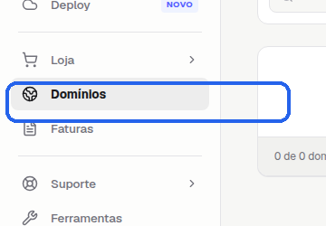
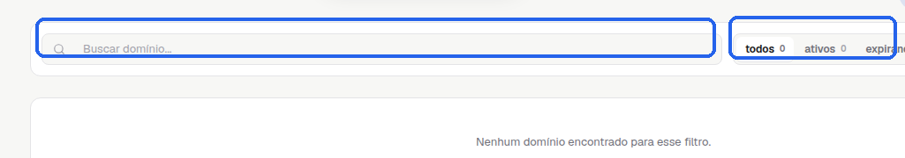
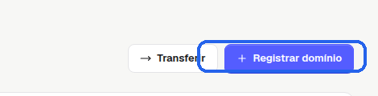

Se você quer localizar a área certa para adicionar domínios na StayCloud, este tutorial mostra o caminho dentro do Painel Novo sem fazer nenhuma alteração na conta.
Use este passo a passo quando você quiser localizar a área de domínios, ver onde fica a opção de adicionar domínio, conferir a tela correta antes de iniciar um cadastro e evitar clicar na área errada do painel.
Depois do login, você chega à tela inicial do Painel Novo. É aqui que começa a navegação.

Nesta tela, você começa pelo menu lateral e procura a opção relacionada a Domínios.
No menu lateral, clique em Domínios.

Esse é o menu que leva você para a área onde os domínios ficam organizados.
Ao entrar na área, você deve ver o título Seus domínios e a lista de domínios da conta.

Essa é a tela correta para confirmar que você chegou na área de domínios e localizar a busca da lista.
Na parte superior da tela, localize a opção Registrar domínio, Adicionar domínio ou nome equivalente exibido na sua conta.

Se a tela abrir uma próxima etapa, pare antes de preencher qualquer dado. Aqui o objetivo é só mostrar onde fica a área.
Se a opção não aparecer, pare no ponto seguro e acione o suporte para confirmar o caminho da sua conta.
Agora você sabe onde encontrar a área para adicionar domínios no Painel Novo da StayCloud e como parar no ponto certo antes de qualquer alteração.
Palavra-chave: adicionar domínios painel novo staycloud
Título SEO: Como acessar a área para adicionar domínios no Painel Novo da StayCloud
Slug: como-acessar-area-adicionar-dominios-painel-novo-staycloud
Meta description: Veja como localizar a área para adicionar domínios no Painel Novo da StayCloud sem alterar nenhuma configuração.
Status: Rascunho local.